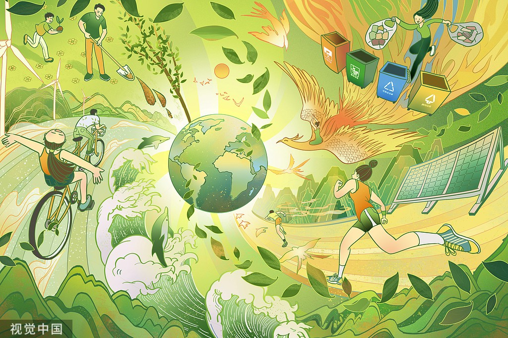
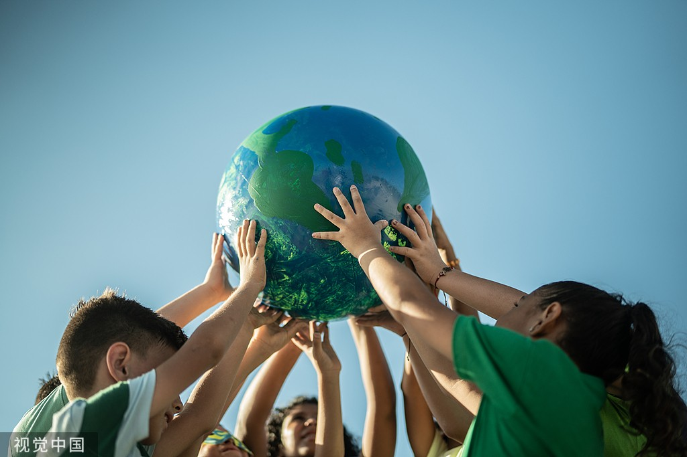
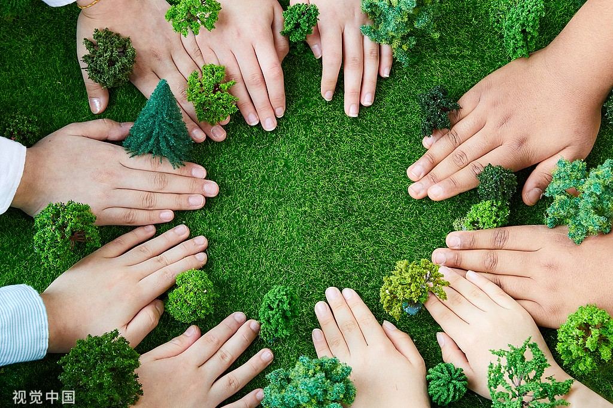

用行动守护绿色家园
每一棵树木，都在为我们净化空气；每一只动物，都是生态链中不可或缺的一环。
我们的一举一动，都影响着这个美丽的世界。让我们从点滴小事做起，
不乱扔垃圾，节约资源，为守护这一方绿色天地贡献力量。
呵护自然，共筑绿色未来
地球是我们的母亲，绿色是她最美的衣裳。
多植一棵树，少用一张纸，节约一度电，
用点滴行动汇聚成爱的力量，守护这如诗如画的绿色家园。
环保行动剪影：共赴春天之约

骑行者乘风穿梭，感受自然韵律

垃圾分类，奏响环保乐章

孩子们用童真守护地球